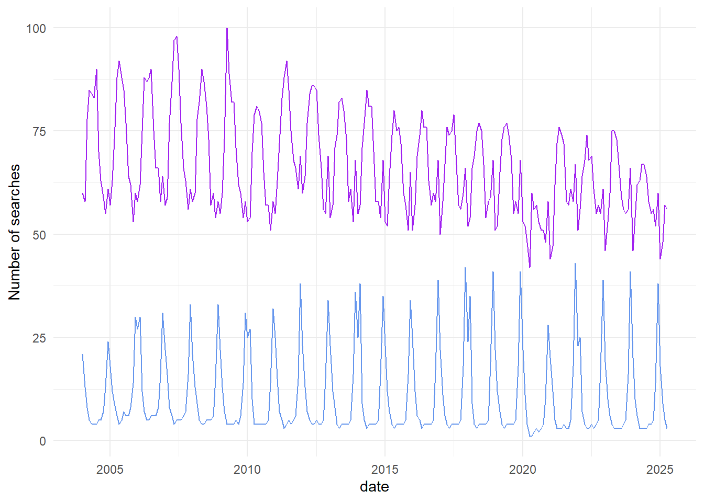
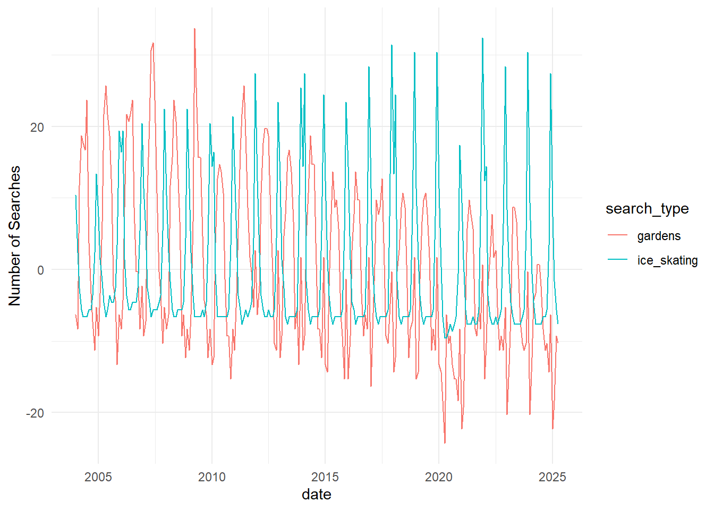
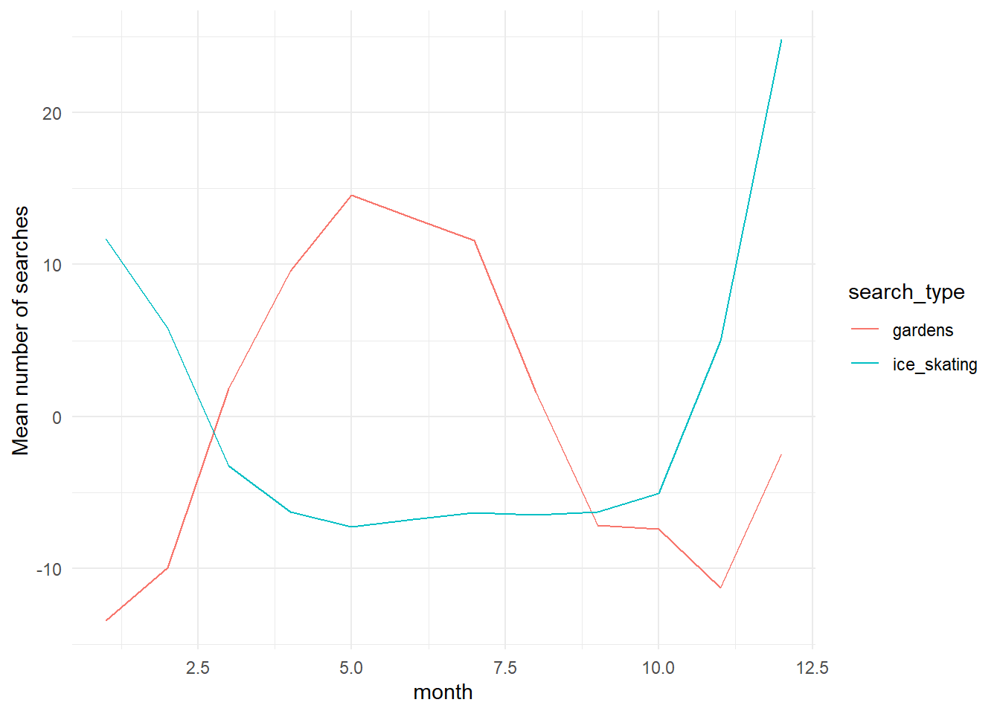
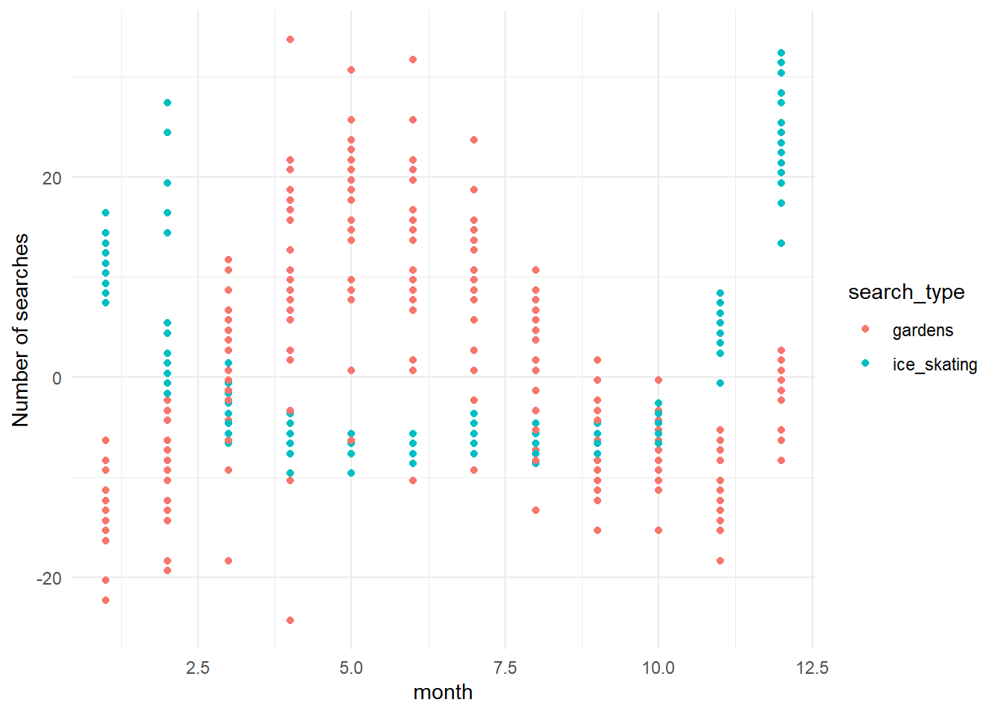

Learn to use the R tidyverse to import data and perform basic data tidying and manipulation.
Learn to use the ggplot package in R to create basic plots of your data.
For this week’s lab, I will expect that you have a basic understanding of R, including how to open R, define variables/objects, use basic R vocabulary (e.g. vectors, matrices, and dataframes), and write code using an Rscript or Rmarkdown file. Please review any of these topics that feel unfamiliar to you, using the following videos (from the Cradle to GraveRLinks to an external site. YouTube Channel) as needed:
These videos will work best if you follow along with the exercises in R.
Tidyverse Tutorial
Introduction
This tutorial steps through some of the basic fuctions of the tidyverse collection of packages that you will use throughout the course. Work through these steps in groups of 2-3. Each person should work in their own R Notebook. Use that notebook to type out each of the commands included in this tutorial, and to take notes on each step.
For this tutorial, we will be comparing trends in the number of Google searches for the terms “gardens” and “ice skating” over time. I downloaded this dataset from the Google trends website. Once you are comfortable with the material in this tutorial, you can download any dataset of search terms from their website and explore trends and patterns using the tidyverse. You can find this dataset on today’s Canvas page - download that dataset and make sure it’s in the same folder as your R Notebook.
Step 0: Set up environment
Before starting any project, you will always need to set up your environment. This can include loading any libraries you will need, setting global formatting options, or a number of other advanced functions. For now, we will focus on loading libraries. You will need readr, tidyr, dplyr, and ggplot, which are all part of the tidyverse universe and can all be loaded together:
library(tidyverse)
Warning: package 'ggplot2' was built under R version 4.5.2
Warning: package 'readr' was built under R version 4.5.2
Warning: package 'purrr' was built under R version 4.5.2
Warning: package 'stringr' was built under R version 4.5.2
── Attaching core tidyverse packages ──────────────────────── tidyverse 2.0.0 ──
✔ dplyr 1.1.4 ✔ readr 2.1.6
✔ forcats 1.0.1 ✔ stringr 1.6.0
✔ ggplot2 4.0.1 ✔ tibble 3.3.0
✔ lubridate 1.9.4 ✔ tidyr 1.3.1
✔ purrr 1.2.0
── Conflicts ────────────────────────────────────────── tidyverse_conflicts() ──
✖ dplyr::filter() masks stats::filter()
✖ dplyr::lag() masks stats::lag()
ℹ Use the conflicted package (<http://conflicted.r-lib.org/>) to force all conflicts to become errors
Step 1: Import data
Now that you have your environment set up, the first thing you will want to do is import the data that you are working with. The most common way this is done is by reading in a comma-separated file (csv) or tab-delimited file (e.g. tsv or txt files). We are using a csv file for this exercise, so you can read in your data using read_csv() from the readr package:
#read in data, assign to a meaningful object name search_data <-read_csv("../data/GoogleTrends_timeline.csv", col_names =TRUE) #this creates an object that is called a dataframe in R. Data frames, like matrices or data tables, have one column per variable and one row per observation. Unlike matrices or data tables, dataframes can store data of various different types together - for example, numbers, integers, character strings (words), or factors. this dataframe has two columns classified as numeric, and one classified as character.}
Rows: 256 Columns: 3
── Column specification ────────────────────────────────────────────────────────
Delimiter: ","
chr (1): Month
dbl (2): gardens: (United States), ice skating: (United States)
ℹ Use `spec()` to retrieve the full column specification for this data.
ℹ Specify the column types or set `show_col_types = FALSE` to quiet this message.
Once you have imported your data, take a look at it to make sure it makes sense. You can do this in two ways: first, in the environment window (upper right corner), find the variable called “search_data” and click on the blue arrow. This will show a drop-down summary of your data. You’ll see each column listed as a vector, and it will show you the name of the column, the type or class of data, and the number of observations in each column.
You can also look at your data in the viewer. Click on the name of the data frame in the environment to open it up in the viewer window. Notice that it opens as a separate tab, and that each vector is shown as a column, with a row for each observation. In this case, we have three columns: one for month/year, one for the garden search term, and one for the ice skating search term. There are a total of 256 observations for each of those columns.
Step 2: Wrangle your data
Usually, the data that you import won’t be exactly what you want to plot or model. Sometimes it will require some tidying - for example, you may incomplete observations (rows) that you need to remove, or inconsistent data entry that needs to be cleaned up (e.g. if the dates are entered as May 2025 and 04/2025, R will not recognize what this is).
Before moving on, we’re going to do three basic tidying steps. First, we’ll separate the date column so that we have a column for month and another for year. Then we’ll change our column names so that they’re easier to use later. Finally, we’ll specify that the date column is actually populated with dates (instead of just a character strings), which R can understand on a chronological scale. All of these changes will get assigned to a new variable, so that we don’t confuse ourselves later.
To do this cleanly, we’re going to use one of the most powerful functions of the tidyverse: the pipe function. The pipe functions tells R to take the data output from one step and send it to the next step. This allows us to write tidy code, in list formats, that is easy to read later.
# tidy dataframe search_data_tidy <- search_data %>%separate(Month, into =c("year", "month"), sep ="-", remove =FALSE) %>%#separate column into year and month rename("gardens"=`gardens: (United States)`, "ice_skating"=`ice skating: (United States)`, "date"= Month) %>%#give columns shorter names mutate(date =ym(date)) #change the date column to year-month format}
Look at your new data frame. It should now have five columns with tidy column names, and the “date” column should be in Date format instead of character format.
Step 3: Visualize data
Let’s start by plotting our raw data.
search_data_tidy %>%#use the search_data_tidy data frame ggplot() +#start a plotting environment geom_line(aes(x = date, y = gardens), color ="purple") +#add a layer with the number of garden searches in each month and year geom_line(aes(x = date, y = ice_skating), color ="cornflowerblue") +#add a layer with the number of ice skating searches in each month and year theme_minimal() +#change the look and feel of the plot ylab("Number of searches")

Pretty cool, right? It looks like we have some cyclical patterns, and maybe they’re opposite each other. It also looks like once of the searches is trending down over time, while the other is staying consistent.
This is a nice visualization of our data, but I think we can do better. Let’s make it easier to see some of those patterns by doing a bit more manipulation of our dataset.
Step 2b: Wrangle your data again
First, we can’t really tell from the plot which line corresponds with which search. It would be nice to have that information in a legend. In order to do that, we need to give ggplot a single column of data for the y values (number of searches), and a second column of data for the grouping variable. We’ll change the format of our data frame to do that.
It would also be nice if the two lines weren’t so far apart. Clearly, there are more searches overall for “gardens” than for “ice skating”, but we’re more interested in the trends over time. Let’s normalize our data so that we can see those trends more clearly.
#use the tidy data as input
#pivot from “wide” format to “long” format
#group the rows according to the type of search
#mutate nSearches: calculate the mean for each group (in this case we’ve grouped by search_type), then subtract the mean from each value in nSearches.
# pivot the data frame from wide to long and normalize datasearch_data_long <- search_data_tidy %>%pivot_longer(gardens:ice_skating,names_to ="search_type",values_to ="nSearches") %>%group_by(search_type) %>%mutate(nSearches = nSearches -mean(nSearches)) %>%ungroup() #always ungroup your dataframe once you're done
Look at your data again. You should have some new columns now: search_type, with “gardens” and “ice_skating” as two types of searches, and nSearches, which has been normalized to be the number of searches over or under the mean number of searches.
Step 3b: Plot the data again
Let’s see what we get with our new dataset
search_data_long %>%#use search_data_long as the input ggplot() +#create a plotting environment geom_line(aes(x = date, y=nSearches, color = search_type)) +#create a new layer with number of searches by date, with color groups for each search type theme_minimal() +#make the plot prettier ylab("Number of Searches") #make a more descriptive y axis label

This way, we can confirm what we thought we saw before: the cyclical nature of the two search types are opposite each other, and searches for “gardens” have been decreasing over time while searches for “ice skating” have not.
What if we want to know which month has the greatest number of searches for each of the search types? Let’s go back to the data.
Step 2c: More wrangling!
Probably the easiest way to answer that question will be to get a average of the number of searches in each month across all years in the dataset, and then see which month is the greatest for each one. Let’s do that in two steps this time, so that we can see the output of each.
#summarize searches in each month and assign to a meaningful variable name searches_by_month <- search_data_long %>%#use search_data_long as the input group_by(search_type,month) %>%#group by month and search type summarise(mean_searches =mean(nSearches)) %>%#calculate the (normalized) mean number of searches in each group ungroup() #always ungroup
`summarise()` has grouped output by 'search_type'. You can override using the
`.groups` argument.
#find the months with the highest number of searches and assign to a meaningful variable name max_searches <- searches_by_month %>%#use searches_by_month as the input group_by(search_type) %>%#group by search type slice_max(mean_searches) %>%#get the row with the maximum number of searches for each group ungroup() #always ungroupmax_searches
And just like that, we have our answer! But we can also plot this data, if we want to visualize it.
Step 3c: More plotting!
searches_by_month %>%#use searches_by_month as input data ggplot() +#open a ggplot environment geom_line(aes(x =as.numeric(month), y = mean_searches, color = search_type)) +#add a layer with a line for number of searches in each month, grouped by search type theme_minimal() +#make it prettier xlab("month") +#add a more descriptive x axis label ylab("Mean number of searches") #add a more descriptive y axis label}

This plot allows us to see seasonal trends within a year. Pretty cool! We ca also plot all of the years separately, instead of an average.
search_data_long %>%#use search_data_long as input data ggplot() +#open a ggplot environment geom_point(aes(x =as.numeric(month), y = nSearches, color = search_type)) +#add a layer with a point for number of searches in each month, grouped by search type theme_minimal() +#make it prettier xlab("month") +#add a more descriptive x axis label ylab("Number of searches") #add a more descriptive y axis label}

The data wrangling and visualization cycle can happen a number of times, and tells us a lot about what patterns are emerging in our dataset. Once we have a good sense of what’s going on, we might want to test some of our hypotheses using statistics. We’re not going to go in depth into modeling in this class - if you want to go into research, you should always be taking as many quantitative classes as you can.
For now, let’s test out one basic analysis to see whether our maximum search months are significantly greater than our minimum search months. Our null hypothesis here is that there are no significant differences between months with maximum and minimum searches, for either search type. We’ll have two alternate hypotheses: that there are significant differences between maximum and minimum months for (1) one of the two search types, or (2) both of the search types.
We’ll need to do a bit more data wrangling, and then we’ll use an ANOVA to determine whether the difference between the maximum and minimum months is greater than the differences among years within each month.
Step 2d: One last data wrangle
We know that the maximum searches for “gardens” happen in May, and the most searches for “ice skating” happen in December. I’m going to eyeball the data and say searches for “gardens” are lowest in January, and searches for “ice skating” are lowest in May. You could confirm that by summarizing the data as we did in Step 2c. Before we can model our data using an ANOVA, we need to filter it to contain the appropriate months and search types.
#filter data and assign it a meaningful variable name maxmin_gardens <- search_data_long %>%#use search_data_long as the input filter(month %in%c("05","01")) %>%#include only the months with max and min nSearches filter(search_type =="gardens") #include only the "gardens" search term #filter data and assign it a meaningful variable name maxmin_iceskate <- search_data_long %>%#use search_data_long as the input filter(month %in%c("05","01")) %>%#include only the months with max and min nSearches filter(search_type =="ice_skating") #include only the "gardens" search term}
Now we’re ready to test our hypothesis with an ANOVA.
Step 4: Model your data
First let’s look at searches for “gardens”:
#run an ANOVA and assign it a meaningful variable name gardens_anova <-aov(formula = nSearches ~ month, data = maxmin_gardens) #y variable is nSearches, x variable is month, using the maxmin_gardens dataset summary(gardens_anova)}
Looking at a summary of our ANOVA shows us that the difference in number of searches between maximum and minimum months is statistically significant. Based on this, we can reject our null hypothesis and focus on our two alternative hypotheses.
summary(gardens_anova)
Df Sum Sq Mean Sq F value Pr(>F)
month 1 8420 8420 173.4 2.57e-16 ***
Residuals 41 1991 49
---
Signif. codes: 0 '***' 0.001 '**' 0.01 '*' 0.05 '.' 0.1 ' ' 1
Now let’s try searches for “ice skating”:
#run an ANOVA and assign it a meaningful variable name iceskate_anova <-aov(formula = nSearches ~ month, data = maxmin_iceskate) #y variable is nSearches, x variable is month, using the maxmin_iceskate dataset summary(iceskate_anova)}
The summary of our ice skating ANOVA shows us that the difference in number of searches between maximum and minimum months is also statistically significant. Based on this, we would conclude that our 2nd alternative hypothesis is true: that the number of searches in maximum and minimum months is different for both search types.
summary(iceskate_anova)
Df Sum Sq Mean Sq F value Pr(>F)
month 1 3854 3854 1206 <2e-16 ***
Residuals 41 131 3
---
Signif. codes: 0 '***' 0.001 '**' 0.01 '*' 0.05 '.' 0.1 ' ' 1
Conclusion
Once you’ve gone through this tutorial, you should have a decent feel for: 1. The tidy data analysis workflow, and 2. How to use the tidyverse to wrangle and visualize your data.
This is just the tip of the iceberg. R and tidyverse are both community-supported coding languages, and because we have a great community, R is a powerful coding language that allows you to do almost anything you can dream of. Over the coming weeks we’ll use tidyverse and the tidy data analysis workflow to analyze real marine mammal research questions. We’ll (1) wrangle and visualize data, (2) make observations about the patterns we see, (3) use those observations to develop hypotheses, and (4) test those hypotheses with basic models.
Today we used some of the most common functions in tidyverse: filter, separate, mutate, summarise, date formatting, pivot, and ggplot. There are many many more. There are good cheat sheets for tidyr, dplyr, lubridate, ggplot, and many more on the Post Cheatsheets website.
If you finish this tutorial and have extra time, try out this exercise:
Exercise
Did you notice that the number of searches for one search type seemed to decrease while the other did not? Let’s see if that was real.
First write out your null and alternative hypotheses.
Then, plot the data: use search_data_long and a geom_point() layer to plot year on the x axis and nSearches on the y axis, with search_type as color (grouping variable). Add a smoothed line: use geom_smooth() to add a linear regression with the same x, y, and grouping variables.
Filter search_data_long to create two separate dataframes: one for “gardens” and one for “ice_skating”.
Run a linear model for each dataset (lm()) and look at the summary to determine whether the relationship between year and nSearches is significant for each search type.
Population structure in Hawaiian pilot whales
Background
Before this week’s lab, please spend some time looking at the figure below to familiarize yourselves with the concept of genetic relatedness, which is defined as the proportion of your DNA that you share with another individual. Closer relatives share more of their DNA, and more distant relatives share less and less of it.
When we average across a population, or across all living things, we find that all individuals share roughly half (50%) of their DNA with their immediate relatives - that is, their parents, offspring, and full siblings (see the darkest grey ellipse in the center of the figure above). All of these relationships are therefore considered to have a relatedness coefficient of 0.5.
If we expand out to the next grey ellipse in the figure, which represents our next closest family members, we see that all individuals share roughly 1/4 (25%) of their DNA with these extended family relatives - that is, half-siblings, grandparents and grandchildren, and aunts/uncles or nephews/nieces. All of these relationships are therefore considered to have a relatedness coefficient of 0.25.
We can expand out again to the third largest grey ellipse in the figure, and we see that all individuals share roughly 1/8 (12.5%) of their DNA with these distant family relatives - that is, great-grandparents and great-grandchildren, great aunts and uncles, and great nieces and nephews. All of these relationships are therefore considered to have a relatedness coefficient of 0.125.
Scientists can use this information to build pedigrees and determine family relationships in wild populations using a combination of genetic data, age data, and sex data. For example, if you know that two individual California sea lions - one is a 17yo female and the other is a 5yo female - have a relatedness coefficient of 0.54, meaning that just over half of their DNA is identical, you may be able to determine that these two individuals are either parent-offspring or full siblings. Given the age difference between the two, there’s a good chance that the older female is the mom and the younger female is the daughter.
What do you think is the relationship of the following individuals?
Individual 1
Individual 2
Relatedness Coefficient
20yo male
10yo female
0.23
13yo female
10yo female
0.56
38yo male
4yo male
0.26
Step 0: Set up environment
Create an R project with an organized directory structure